Thermofluidics and Nanotechnology for Sustainable Energy Systems Laboratory
From interfacial physics to validated energy technologies
We are a research group in the School of Energy Science and Engineering at the Indian Institute of Technology Kharagpur. Our work sits at the interface of nanofluidics and microfluidics: graphene-based desalination, streaming potential, nanofluidic channel fabrication, multiphase microfluidics, droplet dynamics, electrokinetics and the energy performance of buildings.
From molecules to systems

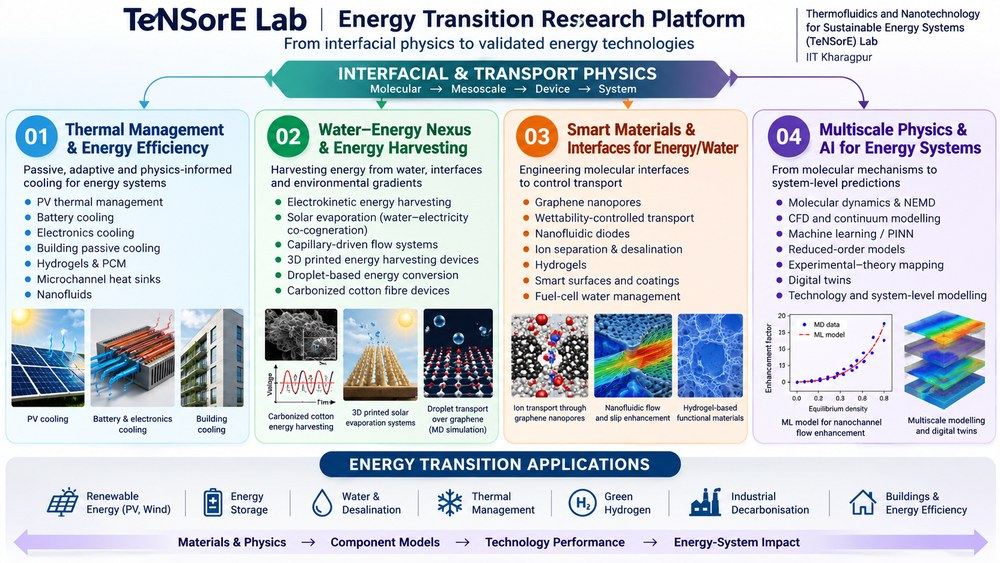
The TeNSorE Lab energy-transition research platform: interfacial and transport physics, from molecules to systems, across four pillars — thermal management and energy efficiency; water–energy nexus and energy harvesting; smart materials and interfaces for energy and water; multiscale physics and AI for energy systems.
What we study

Nanoconfined Fluids and Interfaces
Molecular dynamics of water, ions, polymers and gases in nanochannels, carbon nanotubes and 2D-material membranes.
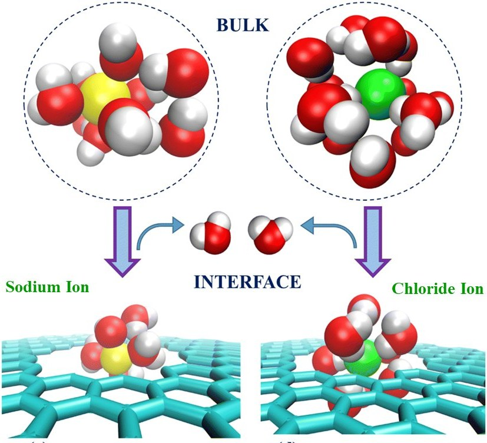
Electrokinetics and Nanofluidic Energy Harvesting
Streaming potential, ion rectification, electroosmosis and DNA translocation, and turning flow into electricity.
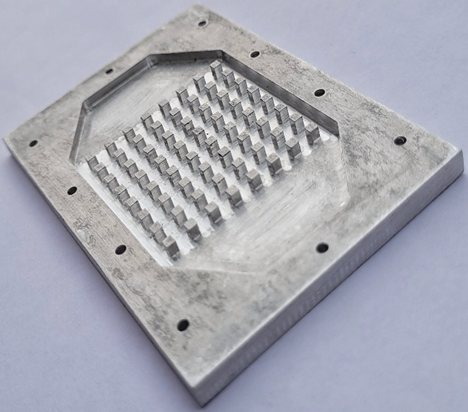
Heat Transfer and Thermal Management
Microchannel heat sinks, nanofluids, boiling and cooling for electronics and batteries.
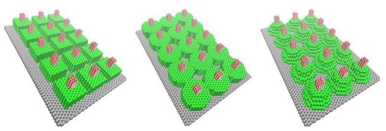
Droplets, Wetting and Smart Surfaces
Drop impact, self-propulsion and water removal on textured, slippery and bio-inspired surfaces.
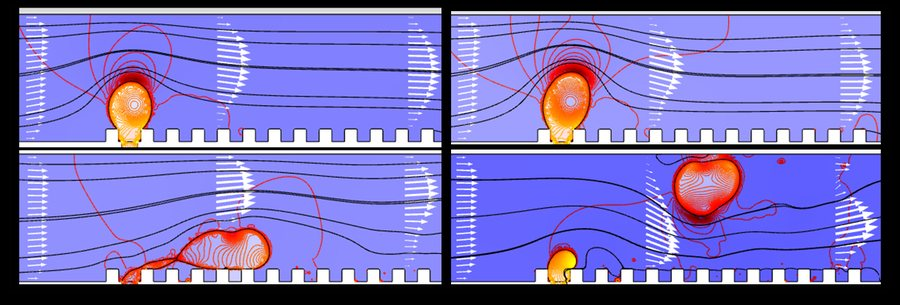
Multiphase and Non-Newtonian Flows
Core–annular flow, jets, plugs, mixing and rheology in micro-, milli- and pipe-scale flows.
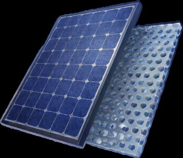
Passive Cooling, Solar PV and Buildings
Hydrogel cooling of photovoltaics, phase-change materials, façades and net-zero buildings.
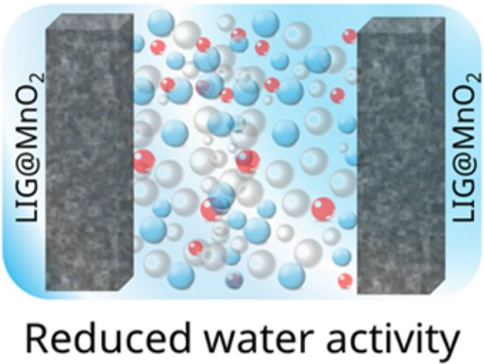
Energy Storage and Functional Materials
Pseudocapacitors, Li–S batteries, electrocatalysts and engineered composites.
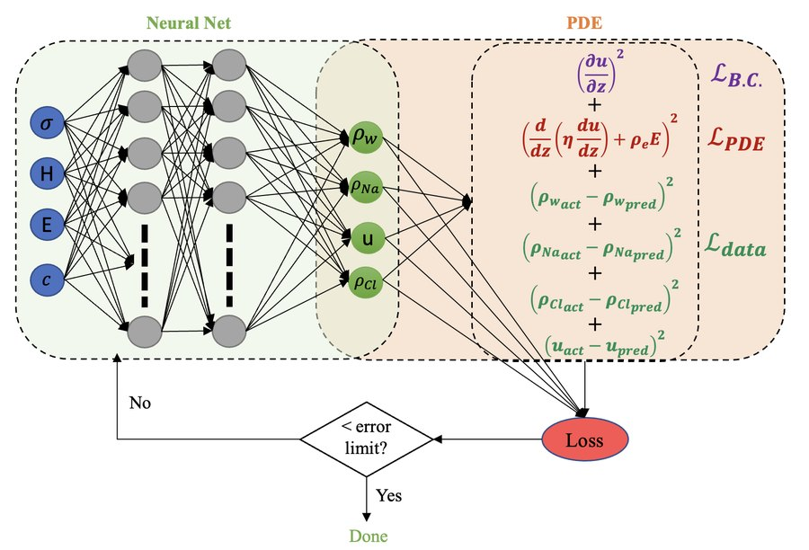
Machine Learning for Transport
Physics-informed and data-driven models that speed up multiscale simulations.
Selected work
Experiments and test beds
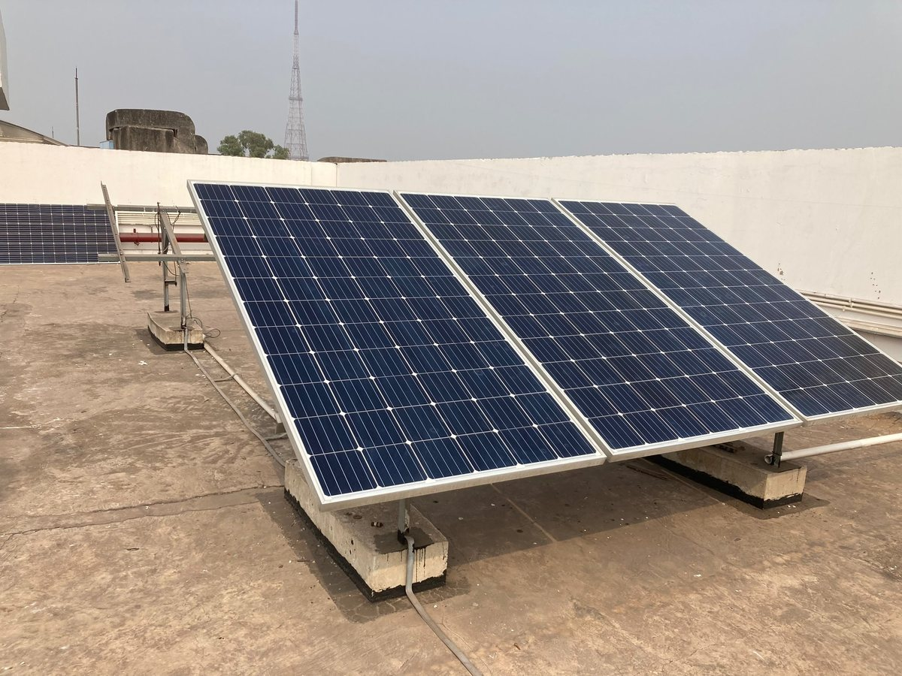
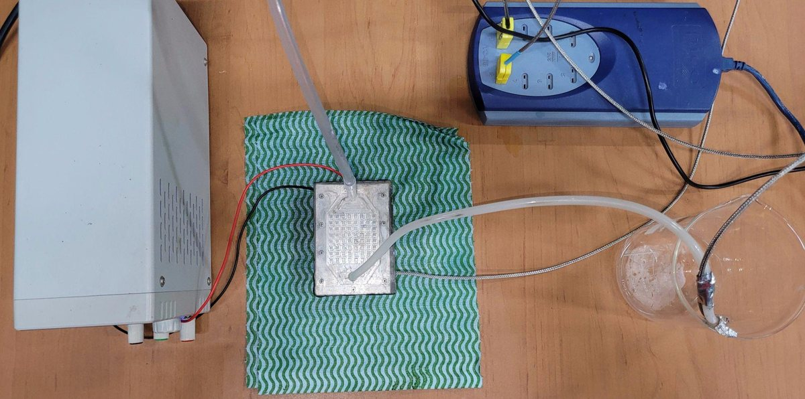
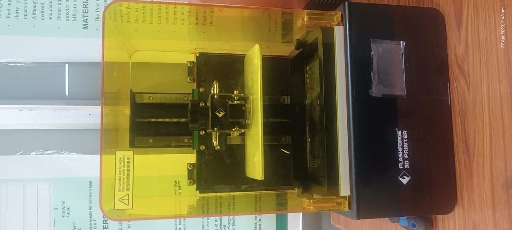
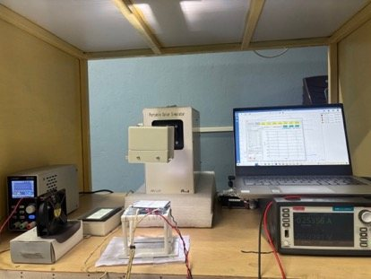
Dr. Chirodeep Bakli
My research focuses on multiscale fluid flow and heat transfer with the twin objectives to understand the interfacial interactions and flow physics, and to use them to develop smart surfaces and for renewable energy generation.
News
- Two PhD theses defended: Vinay Arya and Shashi Rastogi.
- PhD theses defended by Aniruddha Guha, Avinash Kumar and Nilanjan Mondal.
- Sambit Kumar Behera, an M.Tech student of the lab, received the Reliance Foundation scholarship.
- Indo-UK Capacity Building Symposium: Sustainable Energy Transition — Engineering, Entrepreneurship and Wellbeing
Organised by IIT Kharagpur and the University of Birmingham, for faculty, research scholars and PG/UG students from engineering, science, management and law.
Recent journal papers
- 2-D Numerical Investigation of horizontal core annular flow - Performance, Insights and ChallengesEkta Tayal, Joydip Chaudhuri, Chirodeep Bakli, Subhabrata Ray, Gargi DasJOURNAL OF INDUSTRIAL AND ENGINEERING CHEMISTRY, 160, 872-884, 2026
- Aggregation dynamics of molybdenum-based precursors in rarefied carrier gas mixtures under sub-nucleation conditionsNilanjan Mondal, Saurish Das, Sourav Mondal, Chirodeep BakliThe Journal of Chemical Physics, 164 (22), 224310, 2026
- All-climate high-voltage MnO2 pseudocapacitor enabled by a molecularly crowded water-in-salt electrolytePrahlada Thippeswamy, Vinay Arya, Indranil Dey, Chirodeep Bakli, Debasis GhoshJournal of Materials Chemistry A, 14 (41), 27642-27658, 2026
- Atomistic calculations of the precursor molecular diffusivity at rarefaction: Understanding gas transport in semiconductor fabrication linesRamisetti Lalitha, Neha Kumari, Saurish Das, Keerthi Gowdaru, Nilanajan Mondal, Chirodeep Bakli, Sourav MondalResults in Engineering, 31, 111534, 2026
- Cover Feature: Dual‐Function Hydrogel Synthesis for Passive Photovoltaic Cooling for Climate‐Resilient Solar Infrastructure (Sol. RRL 6/2026)Vinay Arya, Vikash Chandra, Anirban Roy, Chirodeep BakliSolar RRL, 10 (6), e70337, 2026